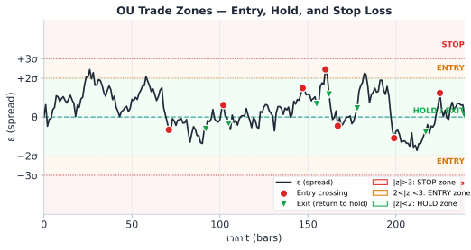
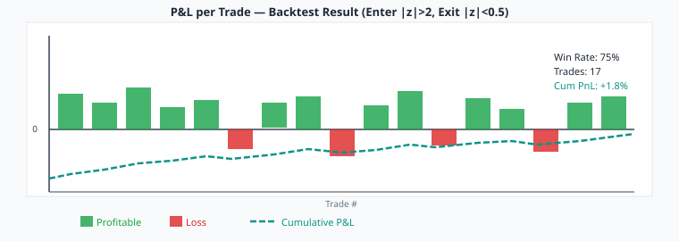

Standard OU assumes the residual noise is i.i.d. with fixed σ. In real BTC markets, volatility is highly heteroskedastic — it bunches in time. Static ±2σ bands drawn at the unconditional standard deviation create two failure modes:

The standard thresholds (Entry ±2, Stop ±3) are good starting points but should be calibrated per pair. Procedure: (1) run a walk-forward backtest on 90 days of history; (2) compute the empirical z-score exceedance rates — if |z|>2 is triggered >8% of bars, widen to ±2.5; (3) check the average holding time: if mean holding < 2 bars, the reversion is so fast the spread may be microstructure noise rather than OU; (4) use the threshold that maximises Sharpe on the test window, then re-validate out-of-sample before live deployment. For BTC cross-exchange spreads, ±2.0 entry and ±0.5 exit is typical; for equity pairs, ±1.5 entry with ±0.3 exit is often used due to slower mean-reversion.
The entry/exit zones are derived from OU parameters (κ, θ, σ) estimated over a historical window. If OU parameters shift — e.g. κ drops (slower reversion) or σ increases (higher spread volatility) — the zone thresholds become miscalibrated: the 2σ entry may correspond to only 1.3σ under the new regime, creating false signals. Mitigation: recalibrate OU parameters monthly (or after any significant market event), monitor that the z-score distribution remains centred near zero with std ≈ 1.0 in recent data, and automate an alert if std(z, 7d) > 1.3 — indicating the denominator σ is stale.
GARCH(1,1) — Generalized AutoRegressive Conditional Heteroskedasticity — updates the variance estimate each period using two inputs: the last shock squared and the last variance estimate.
| Parameter | Typical Range | Effect of Increasing | Effect of Being Too High |
|---|---|---|---|
| ω (omega) | 1e-7 to 1e-4 | Raises the variance floor | Overestimates calm-period σ |
| α (alpha) | 0.05 – 0.15 | Faster reaction to shocks | Too noisy, σ_t unstable |
| β_G (GARCH beta) | 0.80 – 0.92 | Longer variance memory | If α+β_G≥1: non-stationary |
Instead of z = (ε_t − θ) / σ_static, we use the time-varying denominator:
หมายเหตุ: z-score คือสัญญาณหลักของการเข้า/ออก — ตอนนี้เข้าใจว่า z = (ε−θ)/σ บอกว่า spread ห่างจากค่ากลางกี่ "ส่วนเบี่ยงเบนมาตรฐาน" ก็พอ — นิยามเต็ม รวมถึง Robust z-score อยู่ใน บทที่ 10

| Aspect | Constant σ (OU base) | GARCH(1,1) |
|---|---|---|
| Assumption | σ is fixed over time | σ_t varies based on recent shocks |
| Best for | Very stable pairs, low volatility | Pairs with clustering volatility |
| Detects regime | No | Yes — σ_t encodes current regime |
| False signals | High during vol spikes | Low — bands adapt |
| Computation | Trivial (one number) | O(T) per update, very fast |
| When to switch | Default | std(residuals, 7d) / std(residuals, 30d) > 1.5 |
Compute the ratio of 7-day rolling std to 30-day rolling std of the spread residuals. If this ratio exceeds 1.5, the volatility regime has shifted — switch to GARCH z-score immediately. If the ratio drops below 1.1 consistently, constant σ is adequate and GARCH adds minimal benefit.
ค่า ω, α, β_G ต้องหาจากข้อมูล ไม่ใช่ guess — วิธีมาตรฐานคือ Maximum Likelihood Estimation (MLE) ผ่าน library ที่ optimize log-likelihood ของ GARCH โดยอัตโนมัติ
เมื่อ residuals = spread_residuals * 100 (scale จาก fraction เป็น %):
• ε_t มีหน่วย % (เช่น 0.08, 0.15, 0.24)
• ω ที่ fit ได้มีหน่วย %² (เช่น ω ≈ 0.000006 %²)
• σ_t จาก GARCH มีหน่วย % → GARCH z-score = ε_t (%) / σ_t (%) ✓ ไม่มีปัญหา
ปัญหาถ้า mix หน่วย: ถ้า ε_t ใน code เป็น raw (0.0008) แต่ ω ที่ fit ไว้เป็น %² (0.000006%) → σ_t = √(ω_%) × 0.01 ≠ σ_t ที่ถูก
วิธีแก้ที่ง่ายที่สุด: เลือก scale เดียวตลอด pipeline — แนะนำให้ scale ×100 ทั้งหมด หรือใช้ raw ทั้งหมดโดยหาร ω_% ด้วย 10000 ก่อนใช้
GARCH ต้องการข้อมูลพอ: ≥ 250 observations สำหรับ GARCH(1,1) — น้อยกว่านี้ parameter estimate ไม่เสถียร
ในกรณี crypto perp 1-hour bars: ≥ 10 วัน, 5-minute bars: ≥ 1 วัน
Refit ทุก week หรือเมื่อ residual std เปลี่ยน > 20% จาก fit ก่อนหน้า
จากประสบการณ์กับ crypto spread โดยทั่วไปพบ:
ω ≈ 1e-7 ถึง 1e-5 | α ≈ 0.05–0.15 | β_G ≈ 0.80–0.92
ถ้า α + β_G ≥ 1 → model non-stationary → ลอง EGARCH หรือ ตัดข้อมูล outlier ออกก่อน refit
Crypto มักมี "volatility asymmetry" — ราคาลงทำให้ spread volatile มากกว่าราคาขึ้น
ใช้ EGARCH ได้: arch_model(residuals, vol='EGARCH', p=1, q=1)
parameter เพิ่ม γ (asymmetry) — ถ้า γ < 0 แปลว่า negative shock ทำให้ volatile มากกว่า
During a 3-day BTC funding rate divergence event, the Bybit↔Lighter spread becomes much more volatile. We compare static vs GARCH z-scores:
| Period | Spread σ (actual) | Static σ (baseline) | Static z-score | GARCH σ_t | GARCH z-score |
|---|---|---|---|---|---|
| Normal market | 0.08% | 0.08% | 2.0 (signal) | 0.08% | 2.0 (signal) |
| Funding war day 1 | 0.24% | 0.08% | 6.3 (FALSE!) | 0.24% | 2.1 (correct) |
| Funding war day 2 | 0.22% | 0.08% | 5.8 (FALSE!) | 0.23% | 1.9 (no entry) |
| Recovery | 0.10% | 0.08% | 2.5 (borderline) | 0.11% | 2.3 (signal) |
Parameters used (residuals scaled ×100 to %): ω = 0.000192, α = 0.12, β_G = 0.85 (α + β_G = 0.97 < 1 ✓). Long-run σ = sqrt(0.000192 / 0.03) ≈ 0.080 → matches normal-market σ ≈ 0.08% in the table.
Given: ω = 0.0001, α = 0.10, β_G = 0.85, prev_σ² = 0.0004, prev_ε = 0.025
Q: Compute new σ². Is α + β_G < 1? What is the long-run σ²?
Step 1: Check stationarity: α + β_G = 0.10 + 0.85 = 0.95 < 1 ✓ (stationary)
Step 2: new_σ² = ω + α·ε² + β_G·σ²
= 0.0001 + 0.10 × (0.025)² + 0.85 × 0.0004
= 0.0001 + 0.10 × 0.000625 + 0.00034
= 0.0001 + 0.0000625 + 0.00034
= 0.0005025
Long-run σ² = ω / (1 − α − β_G) = 0.0001 / (1 − 0.95) = 0.0001 / 0.05 = 0.002
Interpretation: The recent shock (ε = 0.025) pushed current σ² from 0.0004 to 0.0005025 — a 25% increase in variance. Long-run equilibrium is 0.002, so current conditions are calmer than average (0.0005 vs 0.002).
The spread residual shows ε = 0.48%, θ = 0.00%. Static σ = 0.14%. Current GARCH σ_t = 0.26%.
Naive z = 0.48/0.14 = 3.5. GARCH z = 0.48/0.26 = 1.8.
Q: Should you enter a short-spread position? Explain your reasoning.
Do NOT enter. The GARCH z-score of 1.8 does not meet the threshold of 2.0 for entry. The naive z of 3.5 is a false signal — it appears extreme only because the static σ is outdated.
What GARCH tells us: Current conditional volatility (0.26%) is almost double the historical average (0.14%). This means market conditions are stormy. The spread moved 0.48%, but given current vol, this is only a 1.8σ event — nothing unusual in this regime.
Risk of entering anyway: In a high-vol regime, the spread can continue to expand (mean-reversion is slower when κ is lower in stressed regimes). Entering at GARCH z = 1.8 gives poor risk/reward.
Rule: Always use the GARCH z-score when should_use_garch() returns True. Discard the naive z-score in volatile regimes.
Ch.7 GARCH on Residuals | ต่อไป → Ch.8: Jump-Diffusion OU